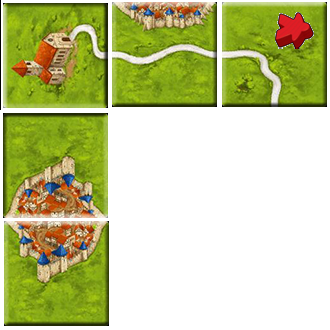
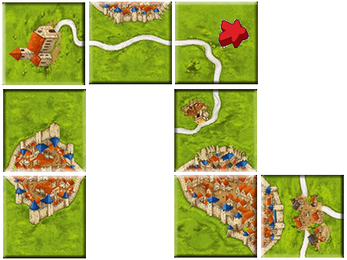
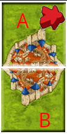
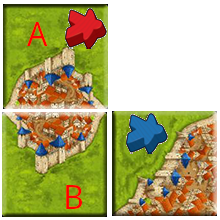
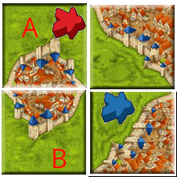

草原ルールがよくわからないので、草原ルール無しで！！という話はよく聞きます。
どうやらこのことは初版のころから言われていたらしく、カルカソンヌの最も確かな情報源の 1 つ Wikicarpedia の情報によるとカルカソンヌ第 2 版からは草原ルール (農民ルールとも) は基本ルールから分離されたそうです。
とはいえ、世界中のトーナメントに相変わらず草原ルールが含まれていることや、ルールブックの中途半端な改正により、本当に基本ルールから分離されたといえるのかはあやふやです。
草原ルールが明確にバリアント・ルールと位置づけられたのであればすっきりとするのですが、第 3 版、つまり現行の最新ルールでさえ、最終得点計算の説明に “Jede Wiese bringt 3 Punkte pro angrenzender, abgeschlossener Stadt. (各牧草地は、隣接する完成した都市ごとに 3 ポイントを獲得します。)” と草原ルールに関する記述がはっきりと残っています。
草原ルールについて記載した項目を別のペーパーに分離はしていますが、基本ルールに草原ルールの記載が残っていて、草原ルールを記載したペーパーのタイトルが “BEIBLATT CARCASSONNE (追加シート カルカソンヌ)” では、結局正しい基本ルールは草原ルールを含むのか含まないのかどっちやねん！！と言いたくなります。
とはいえ、この草原ルールの完全バリアント化を実施すると、現在リリースされているゲームの拡張を含めた全マニュアルを、しかも市場在庫も含めて、全て刷り直さないといけなくなり、それだけでもとんでもないコストがかかりますし、それだけでなく現在リリースされている全てのデジタルアプリ版の改修という途方もない分量の改定作業を行う必要がでてきます。
大企業なら金の力、言葉を代えればお賃金をもらってる多くの人のプロフェッショナルな力、つまり力技で改定作業をやってしまえるかもしれません。それだけの力がカルカソンヌの出版社にあるかというと、まぁないのでしょう。送料負担のお願いを公式サイトでしているくらいなので。それに既存のルールブックが全て紙ゴミになってしまうという環境にやさしくないことにもなるという判断も有ります。
そんなあれこれで玉虫色の解決として、つまりもろもろの妥協案として現在の草原ルールの立ち位置があるのでしょう。
そんな不憫な扱いを受けているだけでなく、わかんねぇと言われている草原ルールですが、1 度わかってしまうと、実は全然難しくなかった、という感想を持ってしまうルールです。
草原を得点対象にするにはどうすればいいのかというと、非常に簡単で、道路、都市、修道院と同様に “完成” させればいいんです。完成させればその草原は得点計算の対象になります。完成してなければ得点対象にならないのは他の地形と同様です。
草原はどうすれば “完成” したことになるのでしょうか。実は簡単です。下図のようにミープルを寝かせて置いた草原から草原をつなげて “完成している都市” につなげることができたら “草原の完成” です。
完成した都市に草原をつなげることができなかったら、その草原は未完成です。未完成なので得点計算の対象になりません。他の地形と一緒です。
それでは草原が他の地形と異なるところを説明します。これも実は難しくありません。
草原の得点計算はゲームの途中では行われず、最終得点計算のときのみ行われます。プレイ中はちっともありがたくないように感じる草原ですが、そう感じてしまうのはプレイ中は得点されないってところがそう感じさせてしまうのですね。
それと草原が他の地形と最も違うところで、かつ草原が他の地形と違って美味しいところなのですが、草原は複数の “完成した都市” につながることができます。つまり下図のように複数の完成都市につなげてやれば、点数ウハウハなわけです。
ゲーム中はリードしていたのに、最終得点計算で草原の得点で逆転負けをする、あるいは逆転して勝利する、といったようなことはこの草原の拡張性によって引き起こされます。草原は大量得点の源なのです。
大量得点の源になり得るとはいえ、ミープルをいつ草原に置くかをきちんと判断することはたいへん重要です。というのはミープルを草原に置くとゲーム終了までミープルは帰ってきません。このことは自由に使える手持ちのミープルが減ることを意味します。
もし草原にポイポイとミープルを置いて手持ちのミープルが無くなってしまうと、仮にゲーム中に都市や道路を完成させてもミープルを置くことができません。その完成させた地形で得点することができなくなります。
なので草原にミープルを置くときは大胆になりながらも、先のことをよくよく考えてプレイする必要があります。
エンジョイ勢に限らず、場合によってはトーナメント参加者にすら嫌われることの多い相乗りや乗っ取りですが、囲碁に置き換えて考えるとそれほど感情的に忌み嫌うものではないことがわかります。
囲碁でもおおよそ白地だったところを黒が攻め込み、白地を奪って黒地にしてしまうということはよくあります。黒が攻め込んだところ白がうまくしのいで白地を守り切るといった展開も囲碁の見どころの１つだったりします。石の生死、地の生死に関する手筋など、たくさんの本が出ていて囲碁の研究テーマの大きな 1 つだったりするくらいです。
カルカソンヌでも同様です。ただカルカソンヌは基本ゲームのタイルが 72 枚と非常に少ないので、囲碁のような死活の手筋とか詰碁のように、たくさんの本が出版されるまでには至っていません。ブログで済んでしまうと多くの人が思ってるのでしょう。
あとカルカソンヌで地形の生死をかけた戦いの跡は、囲碁の生死をかけた美しい戦いの痕跡と違って、盤面が荒廃して見えるという欠点も有ります。荒廃した盤面を目にして悲しい気分になるのはなにもエンジョイ勢だけではありません。
自分のせいであっても対戦相手のせいであっても、やはり荒廃した盤面を見るのは、たとえ対局型プレイスタイルを身に着けてしまった側の人間であっても、やはり悲しい体験です。それだけ激戦だったわけですが、そういった盤面は、プレイヤーに戦い抜いた充実感よりも、戦ってはならぬ、争いはそれ自体が悪である、とまるで教え諭しているかのようです。
そういうこともあり地形を巡っての生死をかけた戦いを好まない人のほうが多いのかもしれません。とはいえ、対戦相手に勝つためには草原を含めた相乗りや乗っ取りを避けるわけにもいきませんし、それを防がないわけにもいかないのです。むろん勝敗に一切こだわらないのであればその限りではありません。
相乗りや乗っ取りは意図せずにそうなってしまう場合もあれば、意図して相乗りや乗っ取りを行う場合があります。ここではプレイヤーの意図はとりあえず横に置いておいて、相乗りや乗っ取りが成立してしまうカルカソンヌのゲームの仕組みを述べるに留めることとします。
プレイ中によく発生する草原の相乗りや乗っ取りの基本的な仕組みについて説明していきます。
下図のように赤が草原 A を確保しているとします。
これでゲームが終了すれば、最終得点計算で完成した都市 1 つにつながる草原 A を確保している赤に 3 点が入ります。
そこで青が以下のようにタイルを打ち込んでミープルを置いたらどうなるでしょうか。
青のミープルは草原 A ではなく草原 B に置かれているので、ルール上まったく問題ありません。
その後のプレイで意図したか意図していないかは別として、青が下のようにタイルを置いたとします。
すると結果として草原 A と草原 B が 1 つにまとまり、1 つの草原となります。これで最低でも相乗りが成立し、相乗りなら赤と青に同じ 3 点が得点されます。
さらに同じような方法でさらに青がミープルを乗せた草原をつなげてきたら、青のミープル数が赤のミープル数を超え、乗っ取りが成立します。その場合公式ルールでは青のみに 3 点が入ることになります。
前述したように草原は大量得点に結びつきやすいという特徴があります。そのためこのような草原の乗っ取りや相乗りを試みたり、あるいはそれに対して応戦するということが往々にして行われます。
しかし攻める方も守る方も気をつけないといけないのは、こういった草原の攻防は手元に戻ることがないミープルを増やすということです。草原に置かれたミープルはゲーム終了まで戻ってこないことを思い出してください。
繰り返しますが手元にミープルが残っていなければ、都市を完成させても道路を完成させても、修道院タイルを引いていい場所に置けたとしても、一切その地形で得点することができません。
このことから、攻める側か守る側かを問わず、どこかのタイミングで戦っている草原の放棄を判断する必要もでてきます。草原での消耗戦にミープルを注ぎ込むよりも、ミープルの回転を良くして、より高得点を得ることができる他の戦術があるケースもあります。
草原の争奪戦は撤退、すなわち草原上のミープルの放棄時期の見極めが肝心です。流れる血は少ないほうがより最終的な得点に結びつきます。
©2024 OrzBruford